Foreign currency transactions are entered in the same manner as other transactions. The key point to note is that the transaction currency is determined by:
The currency of the debtor/creditor for an invoice, or a payment on invoice;
The currency of the bank account for a receipt/payment.
Note that all values on the transaction are considered to be in that currency. Thus an invoice for 100 units of currency made out to a US customer is considered to be USD 100, whereas an invoice for 100 units of currency made out to a Canadian customer is considered to be CAN 100. The transaction currency (and rate) is shown on the Exchange Rate button in the top right of the
transaction.
By default, the exchange rate of a currency is determined by the rate for the period into which it is posted, and the rate is set when the transaction is posted. Thus if a transaction is entered when the exchange rate is x, and is posted after the rate has been reset to y, the transaction will have an exchange rate of y.
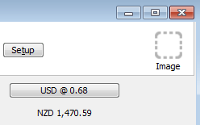
The current exchange rate is displayed on the Exchange Rate button on the top right of the transaction. The converted rate of the transaction in local currency is displayed beneath this.To lock an exchange rate into a transaction:
The transaction Currency Rate window will open
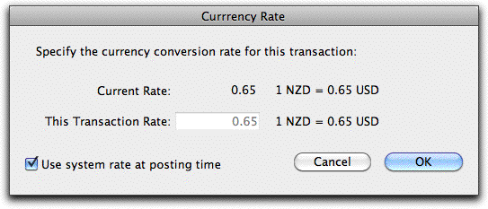
Turn off the Use system rate at posting time option
Enter the desired transaction rate into the rate field
Click OK
Note: A transaction that, at the time of posting, has a different transaction rate to the system rate will result in the recording of a realised or unrealised currency gain or loss. This is done by adding additional lines to the transaction, which you can see if you print the transaction using the Print Details toolbar button.
Note: You cannot specify the transaction rate for the payment or receipt of an invoice.
You can restore the system rate by opening the window and setting the Use system rate at posting time option.
Warning: When you post a backdated multi-currency transaction, MoneyWorks will check for exchange rate changes in subsequent periods. For each such rate change a journal will be created to account for any realised or unrealised gains/losses on the new transaction. To minimise this, try to avoid entering historic foreign currency transactions.
When a foreign currency transaction is duplicated or recurs, the resultant transaction will inherit the system rate of whatever period it is created in, and not the rate of the original transaction.
Payment against a foreign currency invoice may be made in any currency. However for accounting clarity, MoneyWorks will always pass it through the currency bank account of the originating invoice. This is why, even if you don’t have a real bank account for the currency, you must set one up in MoneyWorks.
Payment and receipting is done through the bank account in the same manner as other transactions. All receipts/payments in a batch (using the Batch Debtors Receipt or Batch Creditor Payments command) must be in a single currency.
If you receipt into (or pay out of) a bank account that is in a different currency to the originating invoice, you will be prompted for the amount that was received/ paid in the currency of that bank account:
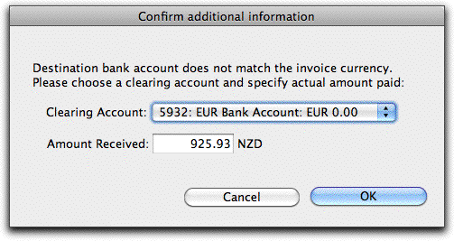
MoneyWorks will generate a receipt into the nominated clearing account (which will be in the same currency as the original invoice), and then a funds transfer from this into the target bank account for the amount specified; this makes the adjustments for currency gains/losses. Unless you want to account for bank charges separately, subsume them into the amount (and hence into the currency gain/loss).
If you know that the invoice has been paid, but do not yet know how much it is in your local currency, use the bank account that is in the currency of the invoice (even if this is only nominal), and when you know the amount that was actually receipted or paid, use the Funds Transfer command to transfer that amount to/ from the actual bank account used. For example, to pay an invoice for
$USD1,000 when you are unsure of the amount actually charged to your local bank account:
The USD Bank Account will now be “in overdraft”
You can just net off any bank charges involving the transfer of funds from the total. If you really care, you can of course enter them as a separate transaction.
When you purchase an item, both the currency used and the purchase price are recorded in the product record. The product.buyprice is the actual buy price in the currency, and this is converted at the transaction rate to give the local currency cost price, product.costprice. If the purchase is tagged to a job, it is the local product.costprice that is transferred to the job system.
If a subsequent purchase is made in a different currency, the last purchase price used is converted to that currency and used as the default price on the new transaction.
When the exchange rate changes, any invoices you hold in that currency will have a different value as a result of the change. Thus if I have invoiced someone for 1,000 Euros, it is worth $2,000 at an exchange rate of $1.00 = 0.5 Euros. If the rate changes so that $1.00 = 0.55 Euros, my 1,000 Euro invoice is now only worth $1,818.18. I have in effect made a loss of $181.82. This is termed an unrealised loss (or gain, if it went the other way).
The same thing would happen if I had 1,000 Euros stashed in a bank account. In this case it is termed a realised loss.
When you change the exchange rate in MoneyWorks, a journal is automatically created to account for the unrealised and realised gains/losses. If you change the rate in a prior period, several journals may be created.
When a foreign currency invoice is paid, the accumulated unrealised Gain/Loss on the invoice brought about by movements in the exchange rate is transferred to a Realised Gain/Loss. This happens automatically.
Contra-ing invoices: Foreign currency invoices and credit notes can be contra-ed in the normal manner. Because of exchange rate changes you might not be contra-ing invoices of equal value in the base currency—such differences are treated as realised gains/losses.
Write-offs: When a foreign currency invoice is written off, an adjustment is made to counter any unrealised gains recorded against the invoice.
Overpayments: Overpayments in foreign currencies are not allowed. Instead In MoneyWorks the Delta accounts have a special code, basically the code of the
-~~DEL
enter a debit note and a credit note pair, and assign the overpayment to the debit note.
Tip: To see the Unrealised Gains/Losses at a point in time, use the Unrealised Gains and Losses report.
corresponding account with you will not see these.
appended. In the normal course of events,
Although deceptively simple looking, multi-currency is in fact fiendishly complicated. For the enthusiasts, the following section explains the implementation in MoneyWorks.
One issue when working with different currencies is that they are no longer additive. For example if I add one US Dollar to one Australian Dollar I don’t come up with a sensible answer of two.
In the MoneyWorks general ledger, a foreign currency account is represented as two separate amounts: the value in the foreign currency, and the value of the difference between that currency and the base currency. The difference is stored in a (normally hidden) account called a “delta account”, so that the following is always true:
Exchange Rates do of course fluctuate. MoneyWorks stores one exchange rate per currency per period. The exchange rate (R) is stored as the number of foreign currency units the base currency is worth, i.e.
$X = R * $Local
When the exchange rate is changed (using the Change Currency Rate command), MoneyWorks will preserve the Currency Ratio. It does this by (in effect) recalculating what the balance in the delta account should be to preserve the ratio, and transferring the difference to a currency gain/loss account.
Thus if we revalue the exchange rate in the previous example from 1.5 to 1.4:
Our $X150 are now worth 150/1.4 = $107.14, so we need to change the amount in our delta account by 7.14 to maintain the Currency Ratio.
Thus we debit the delta account 7.14, and credit the currency gain account by 7.14. The balances in our $X bank accounts are now:
$X Bank Account
$150.00
Base Currency Value = Foreign Currency Value + Delta Value
$X Bank Delta Account
- 42.86
For simplicity, we’ll refer to this as the Currency Ratio (even though its not technically a ratio).
Thus if I transfer $100 from my currency to a bank account in currency X, and the exchange rate is 1.5, I will end up with $X150. In the general ledger this is represented as:
$X = R * $Local R = $X/$Local
= 150/107.14
= 1.4
Which is sensible, because we still have $X150, even though the rate may have changed. The magic thing is that our exchange rate is preserved:
$X Bank Account
$150
$X Bank Delta Account
-50
Thus the sum of a foreign currency account and its delta account will always give the local dollar equivalent at the current exchange rate.
As we have just seen, a movement in the exchange rate will normally produce some sort of currency gain or loss. In the previous example, what we paid $100 for is now worth $107.14. The good news is that we have made a “profit” of
$7.14; the bad news is that in many jurisdictions this may be taxable (which is why you need accounting advice for this sort of stuff).
MoneyWorks recognizes two types of currency gain/loss: invoices in a foreign currency result in an “Unrealised Gain/Loss”; cash (bank accounts) result in a “Realised Gain/Loss”. The GL accounts to accumulate these are nominated as part of the currency setup, and are always in the local currency. You can specify different gain/loss GL accounts per currency if you want to track these by currency. You can also have the same GL account for Realised and Unrealised gains/losses, which will remove the distinction between them.
A currency gain/loss is recorded in MoneyWorks in two circumstances:
when the currency rate is altered. This is recorded as a journal;
when a transaction is posted that has an exchange rate that is different from the system exchange rate. This is recorded as additional lines in the transaction, and can be seen by printing the transaction using the Print Details toolbar button.
To see the realised or unrealised gain/losses for prior period, use the Account Enquiry.
Departments are one way that MoneyWorks Gold provides to simplify your account codes. Although not applicable to every user, they can be extremely useful in the right situation, typically where there are a number of entities that have a similar cost and/or revenue structure.
Departments can also simplify reporting. Most reports in MoneyWorks can be printed for the entire company or for just selected departments.
Examples of using departments:
You run a fleet of vehicles, and want to track the revenue and operating costs per vehicle;
You have a shop with a number of branches, and want to monitor the profitability of each shop, as well as the consolidated profitability;
You are a builder who has a number of large projects per year, and need to track their expenses against budget;
You want to monitor the costs (and possibly the revenue) associated with individual staff members;
You are an entity that is organised around departments (e.g. a school with departments for English, Maths, French etc.)
Consider as an example a construction company who has several major residential and commercial projects, and also has a couple of vehicles. Each project and vehicle can be represented as a Department (cost-centre) in MoneyWorks.
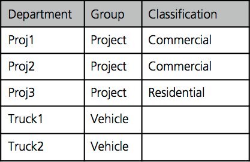
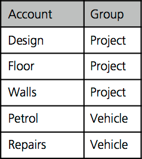
Departments are organised into Groups, so that the projects are in a group "Project", and our vehicles are in a group "Vehicle".
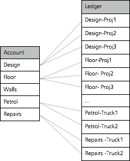
In the general ledger, the accounts that are directly concerned with project income and expenditure are assigned to the Group Project; those that are concerned with Vehicle costs (petrol, repairs, insurance etc) are assigned to the Vehicle group. These are referred to as Departmentalised accounts. Other accounts, such as office overheads, are not assigned to a group.When an account is departmentalised in this manner, an individual ledger account is created for each department in the group, allowing for direct coding, budgeting and reporting.
When an entry is made in a transaction against a Departmentalised account, the department must be specified. Thus if Truck2 incurs repairs, we must code the expense as shown.
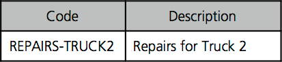
If a new Department is added to a Group, the required new ledger records are automatically created. Thus if the construction company gets a new residential job PROJ4, just adding this to the appropriate Group (Project) will create the ledgers.
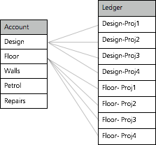
Most General Ledger based reports can be printed by Department (cost centre) or type of Department (Classification).
The Report Settings allow you to run a consolidated report for the whole company, or reports that focus on a segment of the company. These segments include Departments and Classifications.
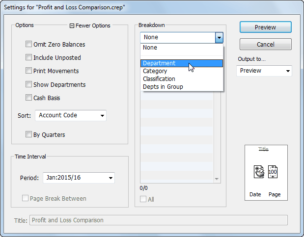
Choosing Department displays a list of Departments, and we can select those we want to report on. A separate report is generated for each Department that is selected, with each report being pertinent to just that Department.
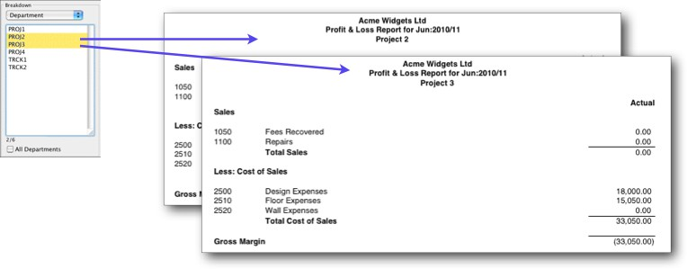
Using Classifications we can get a consolidated report by type Department. Here we are looking at the total for Commercial projects.
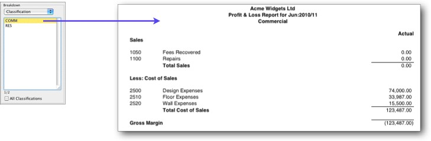
A department is basically a further level of breakdown in an account (in accounting parlance, a department is a subledger).
Departments are useful when the same income or expense codes are applicable to more than one similar item. Without departments each item would need an individual general ledger code, and potentially your chart of accounts could get very large. With departments, the same general ledger code can be shared by more than one item.
Departments can also be grouped for enquiry and reporting purposes by using Classifications. In a vehicle fleet for example, some of the vehicles might be diesel and some petrol. Some of the projects done by a builder might be residential and some commercial. Using classifications, we can easily see how the diesel fleet is performing compared to the petrol, or the residential side of the business compared to the commerical.
Each department can also have its own set of budgets, and any of the budget reports can report on actual and variance performance by department (e.g. a specific vehicle), by classification (e.g. diesel vehicles), or consolidated for the whole company.
Consider using departments whenever you have several items that are essentially the same (e.g. products, projects, staff, vehicles), and that you need to track income or expenses individually for each one.
You need to create a Department for each item, and then put like Departments into a Department Group—basically a container that collects the items together (e.g. a group of projects). Every time you start a new project, you create a new department and add it to the group, and when a project is complete, you remove it from the group.
You can of course have several groups. You might have a group of projects and a group of vehicles. Some of the expenses that are incurred will be specific to a vehicle (for example Insurance, Repairs and Maintenance), and some will be specific to a project (for example Material Usage).
In your chart of accounts you will have a single code for each of the main activities. You then identify which Department Group is appropriate for each of the account codes. So you will assign the group Projects to account Material Usage, and the group Vehicles to Vehicle Insurance as well as Repairs and Maintenance.
When you assign a Department Group to an account code MoneyWorks Gold automatically creates a subledger for each department that is a member of that group. Thus if there are four vehicles in our vehicles group, we would get four subledgers in each of our vehicle insurance and vehicle repairs and maintenance accounts. If we add more vehicles to the group, new subledgers are built for us automatically.
When an account is departmentalised like this, you access individual subledgers through a suffix on the general ledger code. Thus if we had a department code of “RED” for the red Toyota, and a code of “320” for Vehicle Expenses, we would use “320-RED” to identify Vehicle Expenses for the Red Toyota. The hyphen is used to separate the general ledger code from the suffix.
Departments are used to create sub-ledgers for accounts. You first define the departments that you want to use, then group them into Department Groups. Finally, by associating a department group with a set of accounts, you end up with sub-ledgers for those accounts.
The Departments command in the Show menu displays a list of all the departments set up for your system. If no departments exist, the list will be empty.
The list of departments in your system will be displayed.
The Department entry window will be displayed.
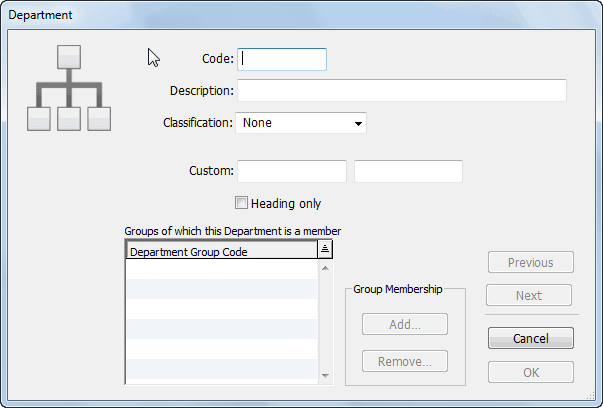
This code is used to identify the department, and is appended to the account code when transactions are entered.
It may be up to 5 characters in length. Characters can be either alphanumeric, and letters are automatically capitalised and spaces converted to underscores. The characters “@”, “?” and “-” are not permitted.
If you have previously defined departmental classifications, assign the classification to this department using the pop-up menu
A classification is an optional way of grouping departments together for reporting purposes. You can add or change classifications at any time.
These are for your own use.
You will not be able to use the department in transactions.
If you have already created Departmental Groups, you can add the department to the appropriate group at this point.
To add the department to a group:
The Add to Groups window will be displayed.
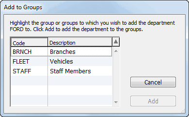
Click the Add button
The department will be added to the nominated groups.
If you have not already created Departmental Groups, departments can be added to Groups when the groups are created or they can be assigned later.
Click OK or Next to save the information
Any of the department information can be altered at any time—including the code. If you do alter a departmental code, any transactions that use that department will be updated (this may take some time).
To modify a department, double click it in the Department list.
Note: You can only change a department, group, or classification code in single user mode—.
To remove a department from a group:
The department entry window will open.
A dialog box asks you to choose which of the other departments in the group will receive the historic balances and any transactions for the department being removed.
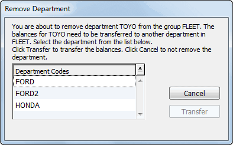
All accounts associated with the group from which the department has been removed will have that subledger deleted, and any balances for the removed subledger will be transferred to the subledger of the nominated department.
All transactions, including posted transactions, that use the account- department are changed to have the nominated department instead of the removed one.
Clicking Cancel will close the window without saving the changes.
Departments may only be deleted if they do not belong to a Department Group. If the department that you wish to delete is a member of one or more Department Groups, you must remove it from these first).